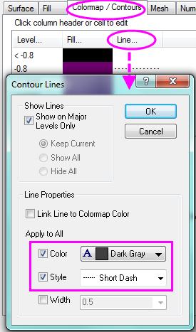
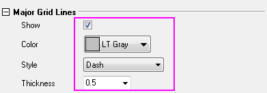

Ternäres 3D-Oberflächendiagramm mit Farbabbildung und Projektion der Konturlinien
3D-Ternary-Colormap-Surface
Zusammenfassung
In diesem Tutorial wird ein ternäres 3D-Oberflächendiagramm mit Z-Farbabbildung und der Projektion von Konturlinien der XYZZ-Daten aus Arbeitsblättern erzeugt.
Origin-Version mind. erforderlich: Origin 2015 SR0
Was Sie lernen werden
Dieses Tutorial zeigt Ihnen, wie Sie:
- ein ternäres 3D-Punktdiagramm mit Z-Farbabbildung erzeugen,
- farbkodierte Konturlinien auf die XYZ-Achsenebene projizieren.
Schritte
Ternäre 3D-Oberfläche erstellen
Dieses Tutorial basiert auf dem Projekt Tutorial Data: <Origin-Verzeichnis>\Samples\Tutorial Data.opj.
- Öffnen Sie das Tutorialdaten-Projekt und navigieren Sie zu dem Ordner 3D Ternary Surface.
- Aktivieren Sie das Arbeitsblatt Ternary Surface in Book1F und markieren Sie die Spalten col(C) und col(D). Wählen Sie Zeichnen: 3D: Ternäre 3D-Oberfläche mit Farbabbildung, um eine Oberfläche mit Farbabbildung zu erzeugen.
- Die Zeichnung wird modifiziert, um die Kanten des 3D-Prismas zu zeigen. Klicken Sie zum Öffnen des Dialogs Details Zeichnung doppelt auf die Zeichnung. Markieren Sie Layer1 im linken Bedienfeld (beachten Sie, dass Sie nicht das Kontrollkästchen neben dem Symbol von Layer 1 deaktivieren). Wechseln Sie zur Registerkarte Ebene, setzen Sie Prisma auf Gesamtes Prisma und aktivieren Sie Ebenengrenze.
- Erweitern Sie den Zweig Layer1, markieren Sie das Symbol der Datenzeichnung und klicken Sie auf die Registerkarte Füllen. Aktivieren Sie das Kontrollkästchen Aktivieren und wählen Sie Farbabbildung. Aktivieren Sie das Kontrollkästchen vor Hintergrundoberfläche füllen und setzen Sie die Farbe auf Hellgrau.
- Wechseln Sie zur Registerkarte Farbpalette/Kontur. Klicken Sie auf die Überschrift Ebene und nehmen Sie im Dialog Ebene festlegen folgende Einstellungen vor. Klicken Sie dann auf OK, um den Dialog zu schließen.
- Um Konturlinien zu dem ternären Oberflächendiagramm hinzuzufügen, aktivieren Sie das Kontrollkästchen neben Konturen aktivieren.
- Um die Konturlinien benutzerdefiniert anzupassen, klicken Sie auf die Überschrift Linie, um den Dialog Konturlinien zu öffnen. Aktivieren Sie unter Linieneigenschaften das Kontrollkästchen vor Farbe und Stil und setzen Sie die Farbe auf Dunkelgrau und den Stil auf Kurze Striche. Klicken Sie dann auf OK.
- 
- Wechseln Sie zur Registerkarte Drahtgitter, deaktivieren Sie das Kontrollkästchen Aktivieren und klicken Sie aufOK.
- Um die Skalierung und die großen Hilfsstriche der X/Y/Z-Achse benutzerdefiniert anzupassen, klicken Sie auf eine Achse im Diagramm, um den Dialog Achsen zu öffnen. Erweitern Sie die Zweige X, Y und Z und drücken Sie die Strg-Taste, während Sie Skalierung für die X- ,Y- und Z-Achse auswählen. Geben Sie für die Großen Hilfsstriche den Wert 0,2 ein.
- Erweitern Sie den Zweig Zh-Achse und wählen Sie Skalierung. Duplizieren Sie den Skalierungsbereich und legen Sie den Wert für die Großen Hilfsstriche, wie unten zu sehen, fest.
- Klicken Sie auf OK, um den Dialog Achsen zu schließen.
Projektion mit Konturlinien erstellen
- Wählen Sie bei aktivem Diagramm Grafik: Layerinhalt im Hauptmenü, um den Dialog Layerinhalt zu öffnen. Wählen Sie dann Arbeitsblätter im Ordner in der Auswahlliste.
- Um ein weiteres ternäres Oberflächendiagramm zu dem Diagramm hinzuzufügen, drücken Sie die Strg-Taste im linken Bedienfeld, wählen Sie die Datensätze XC und CRC299 des Blatts "Ternary Surface" und klicken Sie dann auf die Schaltfläche Zeichnung hinzufügen
 um sie in das rechte Bedienfeld einzufügen. Klicken Sie auf OK.
um sie in das rechte Bedienfeld einzufügen. Klicken Sie auf OK.
- Klicken Sie zum Aufrufen des Dialogs Details Zeichnung doppelt auf das Diagramm. Klicken Sie unter Layer1 auf die zweite Zeichnung und dann auf die Registerkarte Oberfläche. Wählen Sie unter Anzeige die Option Flach und Z-Versatz nach Prozent des Skalierungsbereichs, 0 = unten, 100 = oben.
- Aktivieren Sie auf der Registerkarte Farbpalette/Kontur das Kontrollkästchen Konturen aktivieren. Klicken Sie auf die Überschrift Linie, nehmen Sie auf dem Dialog Konturlinien die Einstellungen wie im folgenden Bild zu sehen vor und klicken Sie auf OK.
- Gehen Sie zur Registerkarte Farbpalette/Kontur, klicken Sie auf die Überschrift Ebene und setzen Sie im Dialog Ebene festlegen die # der großen Hilfsstriche auf 20 und die # der Nebenebenen auf 5. Klicken Sie auf OK, um den Dialog zu schließen.
- Gehen Sie zur Registerkarte Füllen und deaktivieren Sie das Kontrollkästchen Aktivieren.
- Deaktivieren Sie auf der Registerkarte Drahtgitter das Kontrollkästchen Aktivieren. Klicken Sie auf OK, um den Dialog zu schließen.
- Um die Gitternetzlinien auf den Achsenebenen in gestrichelte Linien zu ändern, klicken Sie doppelt auf die Achse, um den Dialog Achsen aufzurufen. Erweitern Sie den Zweig X im linken Bedienfeld und wählen Sie Gitternetze. Klicken Sie dann auf Andere auswählen, um die Gitternetze für alle Achsenebenen auszuwählen. Passen Sie die Hauptgitternetzlinien folgendermaßen benutzerdefiniert an:
- 
- Drehen Sie die Zeichnung, indem Sie an einem der Elemente ziehen (Hinweis: Klicken Sie einmal in den Diagrammrahmen - aber nicht auf die Zeichnung --, um die Funktionen Verschieben/Größe verändern/Drehen zu aktivieren). Alternativ können Sie die Hilfsmittel auf der Symbolleiste 3D-Drehung verwenden.